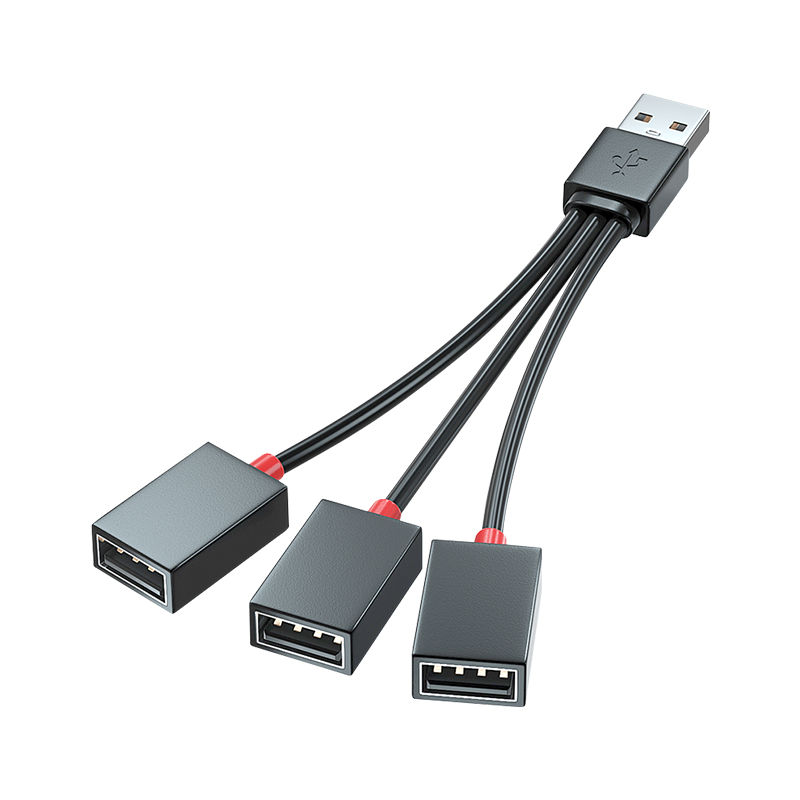

这是什么
本文描述了一种在Kigurumi头壳内安装风扇，从而改善头壳内空气循环，避免眼镜起雾与头壳内积水的方案
免责声明
本方案仅供参考，请确保动手之前已经完整阅读改造方案，并且拥有能执行该方案的动手能力及相应耗材
未满18岁用户请在家长陪同下阅读与执行本方案
作者不对执行该方案导致的以下后果负责：
造成头壳部分或全部损坏的
造成头壳佩戴者受伤的
电池短路的
其他任何造成财产损害或人身伤害的
使用本方案进行风扇改造并不代表可以不选装各头壳店家提供的原厂风扇，请在充分了解原厂风扇安装方案的基础上进行选择，并在原厂风扇可选时优先安装原厂风扇
安装前注意事项
本方案不需要对头壳进行开孔
如果头壳后盖已有风扇孔位或镂空，可在安装时在相应位置增加额外的风扇
本方案设计目标为戴头的时候风扇持续开启运行，如因为各种原因（电池容量不足、临时关闭风扇等）无法持续开启风扇，则无法完全保证风扇效果，请尽量在戴头之前开启风扇，并保持风扇持续开启
如果头壳本身已安装原厂或其他第三方风扇，根据不同的安装方案，可能需要购买兼容的连接线/拆除原有的供电方案/拆除原有的风扇，请在开始安装之前再三确认
安装过程中可能需要拆除部分海绵垫用于安装风扇/电池盒/控制器，请在拆除海绵垫之前确保自己有能力和工具（纳米海绵、热熔胶枪等）拆除并重新安装海绵
根据使用的连接线接口不同，可能需要简单的连接/焊接电线的能力。
如果完全没有任何连接/焊接电线能力，请选择USB接口连接线
连接线可使用透明胶/遮盖胶带/扎带固定在头壳上，避免头壳内空间杂乱
安装风扇不会增强/减弱头壳视野
但安装风扇可以一定程度缓解眼镜起雾问题（需要戴头之前就打开风扇并保持持续开启）
风扇运转时不可避免地会产生一定噪声，请在装入头壳前将风扇贴近头部，确认噪声是否可接受
如无法接受，可选择使用同尺寸风力更小（一般表现为额定电流更小）的风扇进行替换
本方案不推荐使用12V供电，请注意购买的风扇应当为5V风扇
风扇续航时间与风扇种类、电池种类相关，推荐使用18650/21700锂电池
作为参考，两节18650并联在4个风扇同时开启时可提供超过10小时的续航，足以应对任何漫展
不推荐使用4节5号/7号电池进行风扇供电，上述条件下续航仅能维持约1小时
请勿短接锂电池，请将所有电线连接部位进行妥善的绝缘处理，并在头壳外完成电路连接测试之后再安装至头壳内
请勿直接连接无保护板的锂电池，会导致锂电池过放，使其容量大幅下降或无法再次充电
请根据所购买锂电池及电池盒的情况选择相应的充电方案
推荐另购锂电池专用充电器以维持锂电池最佳状态
考虑到电池输出及连接线电流承受能力，一般建议头壳内最多安装5个风扇
改造总花费根据风扇及电池购买数量，一般在100元人民币左右
BOM（物料清单）范例
所有价格均默认不含邮费
图片与链接仅供参考，不代表推荐该店家
~~卖家收邮费？多买几个或者换一家~~
| 名称 | 商品名 | 数量 | 备注 | 参考价格（单个/元） | 参考图片 | 参考链接 |
|---|---|---|---|---|---|---|
| 风扇 | 台达 5010 5CM 5V 0.40A 鼓风机离心双滚珠风扇 BFB0505HHA-C | 2~4 | 请注意型号应当完全一致，否则可能买到风力更小的版本 这个尺寸里最猛的风扇！ |
15 | 链接 | |
| 连接线 | SM对插线2/3/4P连接线对接线电子线2.54MM公母对插一套公母线插头 | 5~10 | 由于风扇提供的是公头，可以适当多买一点母头线 ~~和某辉没有关系~~ |
0.5 | 链接 | |
| 电池 | 国产七里顶 18650充电锂电池 3400mah | 1~2 | 注意该电池不带保护板，需要配合带保护板的电池盒使用 | 12 |  |
链接 |
| 电池盒 | 免焊接18650电池盒电池仓并联3.7V | 1 | 带锂电池保护板，不要买成串联的，记得同时买DC线 | 5.5 |  |
链接 |
| 控制器 | 遥控开关5V 433MHz 无线智能继电器模块带遥控 | 1 | 注意最大工作电压为5V | 7.7 |  |
链接 |
| 固定材料 | 3M魔术贴丙烯酸背胶蘑菇扣黑色250级 | 10 | 买250级，不要买400级的 推荐直接按长度购买，自行裁剪 |
18.8 |  |
链接 |
按照2风扇2电池计算，上述方案共需18.8+7.7+5.5+24+5+30=91元
| 名称 | 商品名 | 数量 | 备注 | 参考价格（单个/元） | 参考图片 | 参考链接 |
|---|---|---|---|---|---|---|
| 风扇 | 鹏达蓝图5015液压轴承大口5CM5V涡轮鼓风机风扇 | 2～4 | 风力相对较低 | 5 |  |
链接 |
| 连接线 | usb分线器一拖三数据线插头充电U盘扩展器车载多接口一分二转接头 | 1 | 买仅充电的就行，无需数据功能 | 7.8 |  | 链接 |
| 电池 | 德力普水枪18650锂电池3.7v | 1 | 注意需要店家额外送一根转USB母口的线，或者另外买一根 | 29.9 | 链接 | |
| 电池2 | XTAR 18650 3300mAh锂电池强光手电专用 3.6v大容量 带保护板可充 | 1 | 另外一种带保护板的电池，不带线，需要配合下面的电池盒一起使用 | 36 |  |
链接 |
| 电池盒 | 18650电池盒 | 1 | 1.2 |  |
链接 | |
| 控制器 | 迷你RF单色控制器 5V射频单色灯条控制器 led灯条无线11键USB接口 | 1 | 7.2 | 链接 | ||
| 固定材料 | 3m高曼无痕魔力扣照片相框贴婚纱照装饰画固定免钉不伤墙面免打孔 | 8～16 | 注意不要买成没有蘑菇扣的类似商品 | 14.2/8 25.8/16 |  |
链接 |
按照2风扇1电池计算，上述方案共需14.2+7.2+1.2+29.9+7.8+10=70.3元
注意BOM里面几乎所有的东西都可以替换，以上两个BOM仅供参考：
风扇可以换成同直径风力更小的风扇以降低噪声
如果确实需要自行挑选风扇，请注意风扇额定电压应当为5V，不要购买本方案不支持的12V风扇
一般来说，同尺寸下额定电流越大的风扇，其风力也越大
连接线可以全部替换成USB接口，进一步降低改造难度（或替换成其他任意你喜欢的接口~~以提高改造难度~~，如田宫接口、XT30等）
由于整套方案正常工作电流不会超过1.5A，不会因为使用特定的接口出现烧接口等问题
电池和电池盒可以直接取消，使用外置充电宝
注意大多数充电宝在负载较低时会自动断电，会导致风扇全部关闭后无法进行远程遥控，需要重新插拔USB线激活充电宝
控制器可以直接使用非无线控制器，此时需要将控制器布置在靠近头壳外边沿的位置方便开关
固定材料可以（但不推荐）全部使用热熔胶，以牺牲可维护性的代价降低成本
不应该将电池/电池盒永久固定在头壳内部，电池在不使用时应当拆下保存
购买风扇时，一般均可让风扇卖家帮你改成对应的接口，省去自己改线的麻烦
电池可根据自身品牌偏好进行挑选，但无需购买支持大电流的电池（常用于强光手电等，容量相对较低）
如果使用无内置保护板的锂电池，请务必选择带保护板的电池盒以防止电池过放
安装步骤
将购买的风扇、控制器和电池在头壳外按照以下电路图进行连接，并进行测试
如果风扇不转，请检查电路连接是否正常（电路断开），电池是否出现异常发热（电路出现短路）


实物连接图相比电路图省略了一个风扇（Fan2）
将风扇1和风扇2背部按照如图所示贴上一条蘑菇扣，并将另外一条蘑菇扣（不撕保护膜）十字交叉按在这条蘑菇扣上
图中风扇出风口方向朝下，进风口被切割板堵住了
注意蘑菇扣的粘贴方向和风扇出风口的关系：
第一条蘑菇扣与出风口平行
第二条蘑菇扣与出风口（和第一条蘑菇扣）垂直


将风扇1贴近头壳如图所示的位置，确认可以贴在此处后撕下蘑菇扣保护膜，并贴在头壳上
注意风扇进/出风口方向需要与图示方向一致（出风口方向朝下，指向眼片与鼻子）

（可选）将风扇2按照步骤3中的方式，贴在头壳另一侧
注意风扇进/出风口方向需要与图示方向一致（出风口方向朝下，指向眼片与鼻子）

将电池盒背部按照如图所示贴上蘑菇扣，并将另外两条蘑菇扣（不撕保护膜）十字交叉按在这条蘑菇扣上

将电池盒贴近头壳如图所示的位置，确认可以贴在此处后撕下蘑菇扣保护膜，并贴在头壳上
这一步如果感觉蘑菇扣贴不上去，可适当移动电池盒和蘑菇扣，或移除部分挡住电池盒位置的海绵
如图所示，为了寻找合适的位置安装电池盒，电池盒安装位置并不在头壳中心

将控制器背部贴上蘑菇扣，贴近头壳如图所示位置，确认可以贴在此处后撕下蘑菇扣保护膜，并贴在头壳上
控制器的可选位置较多，请自行寻找更适合自己的位置
图中为了便于指示控制器的位置，在固定好的控制器上方放了另外一个控制器

（可选）将风扇3与风扇4安装在如图所示的位置，出风口一左一右
即使头壳内无类似的导风结构，将风扇安装在此处仍然能够起到一定的效果
注意如果头壳后盖部分已经镂空，则应该将进风口面朝外（如图所示），否则进风口方向应该与前置风扇1/2一致（朝内）

再次进行测试，确认所有风扇均可正常运作，电池无异常发热问题
保持风扇运转，戴上头，检查电池盒是否影响到了头壳佩戴舒适性，并体验风扇散热效果
上述步骤中提供的位置一般不会影响到头壳佩戴，如果确有影响，需将电池盒移到不影响头壳佩戴的其他位置
风扇体积和重量较小，一般难以影响头壳佩戴
摘下头，取出电池盒与电池
注意不佩戴头壳时应当及时取出电池盒与电池，防止电池长期存储出现老化等问题
（可选）使用遮盖胶带固定电线，使头壳内部更加整洁

Q&A
为什么不用7号电池？
4节7号电池是一种传统的风扇供电方案，曾被多家头壳厂商所使用
但使用4节7号电池仅能提供1～2小时的风扇续航，远远无法覆盖一次漫展所需时间
所谓的『7号电池容易购买替换』实际上仍然需要用户进行摘头更换，无法弥补续航过短这一问题
18650电池的安全性已在各种手持小家电上得到广泛验证，在正确使用的前提下安全性一般足够可靠
如果实在对头壳内供电不放心，也可用头壳外充电宝供电的方案进行替换（需自行解决充电宝和线的隐藏问题）
为什么不用5号电池？
4节5号电池盒太硕大了，更加塞不进头
4节5号电池的续航仍然不如一节18650
其他理由见上述
~~两个电池盒串联？那你为什么不装两节18650~~
为什么不用软包锂电池？
小尺寸的软包锂电池容量远低于18650，仅适用于风扇较少且不需要长时间续航的场景
和18650相同容量的软包锂电池通常面积较大，相比18650更难装入头壳，且在安装时还可能出现电池折弯等危险因素，一般不推荐使用
~~作者不喜欢~~
为什么不用12V供电？
~~作者不喜欢12V~~
12V供电意味着如果不进行电压转换，需要三节18650电池，更加占用头壳内空间，且对电池的一致性要求更高
如果使用1～2节电池并进行电压转换，则会对续航造成一定影响
为什么不用更大的离心风扇？
更大的离心风扇需要头壳在设计时就进行配合才能安装，本方案上述列举的两款风扇可兼容大多数头壳
以及，更大的离心风扇一般不提供5V版本
~~作者不喜欢12V~~
为什么不用噪声更小的轴流风扇？
轴流风扇需要头壳在设计时就进行配合才能安装
小尺寸的轴流风扇风压低于同尺寸离心风扇，无法有效提供通风功能
而且显而易见地，轴流风扇无法安装在真正需要提供通风的位置（~~除非做头的时候在额头上开孔~~）
~~4056？12V、需要设计配合、噪声大三条全占了~~
为什么不用外置手持小风扇/挂脖风扇？
外置手持小风扇无法持续向头壳内送风，更多用于给其他没有内置风扇的头壳使用者应急使用
挂脖风扇由于角度设计问题，一般难以将风吹入头壳内部，无法起到通风作用
手持/挂脖风扇通常也使用~~杂牌~~18650电池，侧面证明了此类电池的安全性
前置风扇这么安装不是内循环吗？
前置离心风扇安装方向指向鼻子，且风压足够大，实际上呼吸时产生的水汽会从头壳下方排出，并不参与内循环
即使长期（4～8小时）佩戴头壳之后，前置风扇仍然能起到一定的改善呼吸、防止眼镜起雾的作用
如果条件允许，可以按照本方案描述安装额外的后置风扇以取得更好的通风效果
为什么不用半导体制冷片？
最小的20x20mm半导体制冷片在5V电压下都需要1.5～2A的电流，一片的功率就超过了本方案4风扇全开的功率
而且半导体制冷片热端需要风扇进行散热，冷端需要风扇吹出冷风~~总不至于直接把制冷片贴额头上~~，仍然需要给相应的风扇供电，进一步提高了供电需求
如果真的想使用半导体制冷片加强制冷效果，推荐使用外置充电宝与PD协议供电以获得最佳效果~~此时明显需要使用12V风扇~~
为什么用蘑菇扣而不是双面胶？
由于头壳内可安装风扇的位置大多数都是曲面，使用有一定厚度的蘑菇扣相比无厚度的双面胶更能贴合头壳，防止出现固定不牢等情况
使用有一定厚度的蘑菇扣也能避免风扇直接与头壳接触，缓解风扇运行时带来的共振问题
同时使用蘑菇扣也能便于用户后期进行拆装，以防万一需要进行维修等情况
~~用魔术贴？你是七菇茹咪吗（~~
这个方案不如xx店家的！
头壳厂商由于能从设计之初就针对风扇进行设计，效果本就应该优于本改造方案
实际上大多数头壳厂商在设计头壳结构时并未考虑到风扇安装（~~部分店家甚至拒绝安装风扇~~），也未在安装风扇后对风扇的有效性进行测试，导致实际风扇效果大多不如人意
如果确实有某店家原厂风扇方案优于本方案，推荐分享给大家！
我是头壳厂商，我想用这个方案
欢迎使用！
但是作为头壳厂商，你应该能拿出比这个方案更好的解决方案
这个方案不如我自己改的！
欢迎分享你的方案！
头壳额头部位没有平整空间！
对于前置风扇，请确认前置风扇的安装位置是否与安装步骤一致
如果额头部位较圆，可将前置风扇适当左右平移，或者参照电池盒的固定方式，在头壳上贴两条蘑菇扣来固定风扇
也可以考虑将前置风扇安装至脸颊部位，但一般此处空间太小，不做推荐
头壳后盖部位没有平整空间！
对于电池盒，可将未撕下保护膜的蘑菇扣预先扣在电池盒上，在头壳内轻轻按压，寻找其他适合安装电池盒的位置
由于电池盒需要频繁拆装，一般建议用靠近电池盒边缘的蘑菇扣与头壳内的蘑菇扣固定，可能需要用户多次测试，寻找牢固和易拆装的平衡点
控制器一般较小，很容易固定
对于后置风扇，如果头壳镂空孔位较多，可以考虑使用扎带绑在头壳上
如果镂空孔位较少或没有，则需参考前述前置风扇或电池盒安装方案
风扇不转！
请在头壳外测试完成之后再进行安装
如果单独测试该风扇仍然不转，请检查并更换风扇
如果装好之后整体测试不转，大概率是线连错了，此时应当同时注意电池是否产生了异常发热
如果确认线材连接正常，请检查安装风扇时是否将热熔胶或其他异物沾到了扇叶上卡住了风扇
如果风扇测试时正常，但戴上头之后不转，请检查是否有异物卡住了风扇扇叶
遥控失灵了打不开！
请在头壳外测试完成之后再进行安装
请检查电池是否有电
请检查风扇是否被卡住
如果使用充电宝，请插拔一次充电宝连接线以重新激活充电宝
风扇好吵！
对风扇声音的接受程度因人而异，一般在戴头一段时间之后即可习惯风扇声音，可正常与外界进行交谈沟通
安装风扇时使用基于蘑菇扣的弹性连接材料相比使用双面胶可以更有效地降低风扇共振噪音
安装风扇时请注意尽可能让风扇不接触头内其他物体（如海绵等）
如果仍然觉得风扇太吵，可以以牺牲风扇散热效果为代价临时关闭其中一个风扇或全部风扇
如果仍然觉得风扇太吵，请自行更换风力更低的风扇型号
如果仍然觉得风扇太吵，请将使用蘑菇扣固定的风扇/控制器/电池拆除，即可还原至未装风扇的状态
风扇没啥用！
请确认风扇是否已开启
请确认前置风扇的安装方向是否与安装步骤一致
如果仍然觉得没用，请确认风扇型号是否与BOM列表范例中推荐的风扇型号一致，使用功率较低的风扇可能会一定程度上降低散热通风效果
如果仍然觉得没用，请将使用蘑菇扣固定的风扇/控制器/电池拆除，即可还原至未装风扇的状态
~~如果使用了热熔胶固定，请慢慢拆~~
~~或者只把电池拆下来也行，剩下的东西没啥重量~~
风扇/控制器掉下来了！
~~风扇/控制器这么轻你怎么把它搞掉的~~
蘑菇扣安装时请适当用力压紧，防止蘑菇扣之间虚扣
电池盒掉下来了！
请检查电池是否因摔落出现划伤/形变等损伤，如果存在损伤，请立即废弃电池
蘑菇扣安装时请适当用力压紧，防止蘑菇扣之间虚扣
如果还是掉，请检查电池盒与头壳之间的接触面是不是太小，必要的情况下请换个位置固定电池盒
电池好烫！
请立即切断电源，如果是戴头的情况下请立即摘头并取下电池，如有不适，请寻求专业医护人员的协助
本方案在正常工作状态下电池不应当发热，一旦发现电池异常发热即意味着出现电池短路等危险问题，请立即切断电源，并重新检查电路是否存在短路问题
遥控器丢了！
如果使用RF控制器，请直接更换全套控制器
如果使用433MHz遥控器，可事先多买几个遥控器，并在安装时进行配对
~~如果不使用无线控制器，那你没有遥控可丢~~
没电了！
请不要同时对电池进行充放电操作（一边用，一边给电池充电）
推荐使用两节18650并联，两节18650并联的情况下，同时给4个风扇供电续航可长达10小时
请在长时间出展之前预先将电池充满电
如果续航不及预期，请及时检查电池是否发热，可能是由电路短路导致的续航下降
可以适当关闭部分风扇，以牺牲通风效果为代价延长续航
安装后注意事项
如果选择电池内置，请在不用的时候取出电池，以防止长时间不用电池老化漏液等问题
如果有多个头壳，请注意分类存放遥控器
推荐在遥控器上贴标签写明对应哪个头壳
如果因为翻新/补漆等情况需要完全拆除风扇，请尽可能将固定用的蘑菇扣保留在头壳内，并告知负责翻新/补漆的店家
蘑菇扣自带的丙烯酸背胶一般不会残留在头壳内，如果确实需要拆除蘑菇扣，可直接撕下
版本信息
V1.2.20230703.MD
原文链接
版权信息
通用风扇改造方案 © 2023 by Kazamori is licensed under CC BY 4.0. To view a copy of this license, visit http://creativecommons.org/licenses/by/4.0/